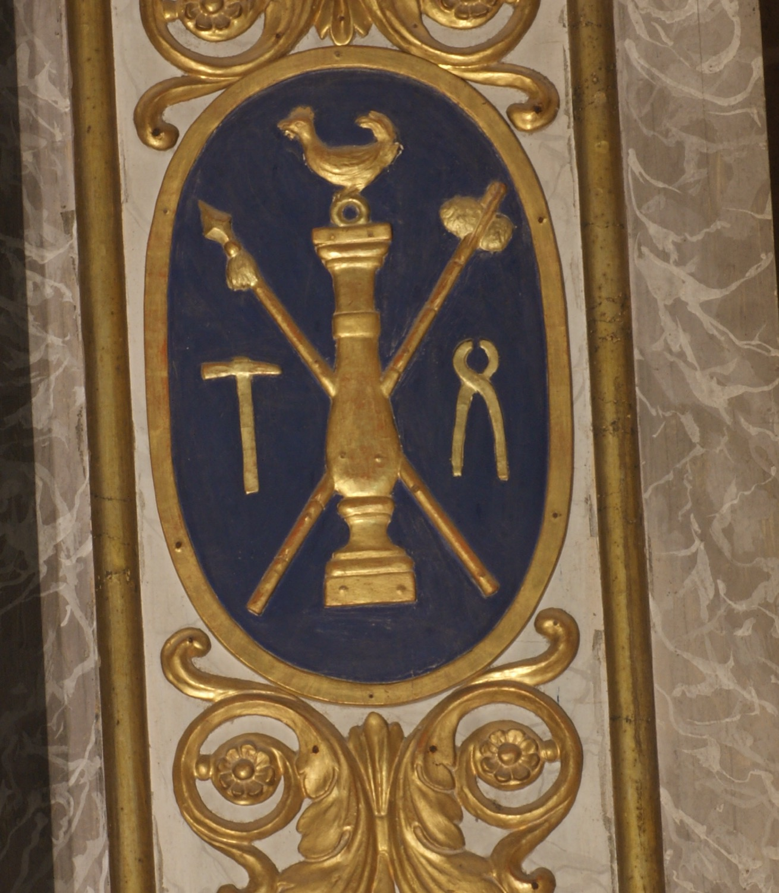

Els emblemes de la Passió, o Arma Christi, són un conjunt d’objectes associats al patiment i la mort de Jesucrist que amb el temps s’han convertit en símbols de devoció cristiana. En aquest relleu hi apareixen els següents: la columna on Jesús va ser lligat i assotat; el martell amb què li clavaren els claus; les tenalles amb què li llevaren els claus de la creu per retirar-ne el cos; la llança amb què el soldat Longí li travessà el costat; l’espongera amb què li oferiren vinagre per beure, i el gall en referència a les negacions de sant Pere.